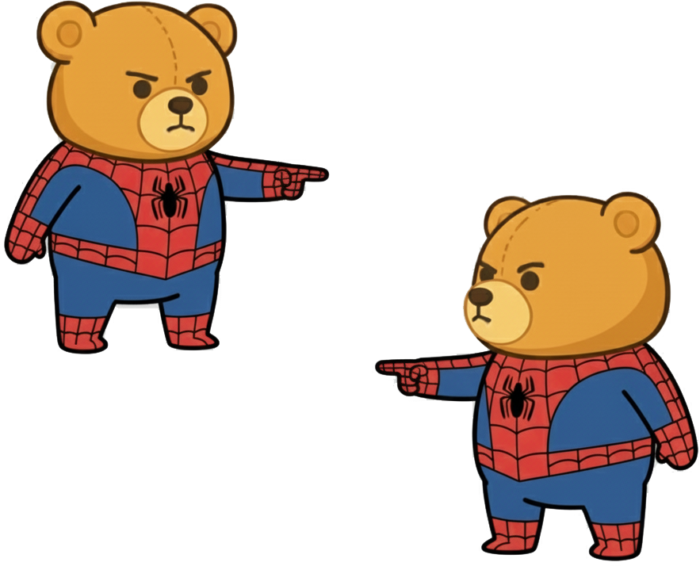

Is that LLM feature any good?
Simon P. Couch - Posit PBC

When it comes to running evals on your LLM apps…
You really should be!
You can do it!
You really should be!
[evaluating your LLM product]
Like software engineering, success with AI hinges on how fast you can iterate. - Hamel Husain
https://hamel.dev/blog/posts/evals/
In SWE:
- Make changes
- Evaluate quality
- Debug issues
(coding)
(unit testing)
In AI:
- Make changes
(prompt engineering, fine-tuning, …)
In AI:
- Make changes
- Have a looksie
- Whack-a-mole
(prompt engineering, fine-tuning, …)
AI ü§ù SWE tooling
- Make changes
- Evaluate quality
- Debug issues
(prompt engineering, fine-tuning, …)

You can do it!
Evaluations of ellmer-based apps are plug-and-play:

Evaluations of ellmer-based apps are plug-and-play:
Evaluations have three pieces:
- Dataset
- Solver
- Scorer
A few:
inputs: Prompts that users might providetargets: Corresponding grading guidance
e.g.
input: “Are there any talks about evals?”target: “Yes, Simon Couch will be giving a talk called ‘Is that LLM feature any good?’”
The conf chat app looks like this:
Your solver is the client✅
Wait, we’re using an LLM to grade an LLM’s output?

Wait, we’re using an LLM to grade an LLM’s output?
Yes.
✅ Solving [7s]
✅ Scoring [5.5s]When it comes to running evals on your LLM apps…
You really should be!
You can do it!
github.com/simonpcouch/conf-25